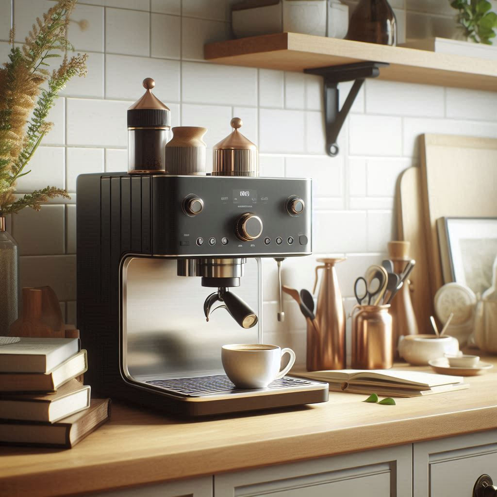

Brewbacca
Den ultimata kaffekompanjonen för hem och caféer
1999 kr
Upplev kraften i Brewbacca, en kaffemaskin i toppklass som kan brygga alla typer av kaffe med precision och enkelhet. Perfekt för både hemmabaristas och professionella caféer.
Mångsidig bryggning
Gör alla typer av kaffe från espresso till kallbryggt
Precisionskontroll
Justera temperatur, tryck och bryggtid
Redo för hem & café
Lämplig för både personligt och kommersiellt bruk
Huvudfunktioner
- Multibryggningsfunktion: espresso, droppkaffe, pour-over, kallbryggt
- 15-bars tryckpump för perfekt espressoextraktion
- Dubbelt värmesystem för samtidig bryggning och ångning
- Anpassningsbara användarprofiler för personlig bryggning
- Inbyggd kvarn med 40 malningsinställningar
- 7" pekskärm med intuitivt gränssnitt
- Wi-Fi-anslutning för fjärrstyrning och uppdateringar
Tekniska specifikationer
| Mått | 38 x 30,5 x 45,7 cm |
|---|---|
| Vikt | 13,6 kg |
| Effekt | 1500W |
| Vattentank | 2,5L |
| Bönbehållare | 500g |
| Garanti | 2 år |
Kafferevolutionen
Brewbacca är inte bara en kaffemaskin; det är en revolution inom kaffebryggning. Oavsett om du är en hemmaentusiast eller caféägare levererar Brewbacca barista-kvalitet på kaffe med oöverträffad konsistens. Den avancerade tekniken och användarvänliga gränssnittet gör det enkelt att skapa den perfekta koppen varje gång, oavsett din expertisnivå.
Detta ingår
- Brewbacca kaffemaskin
- 58mm portafilter
- Mjölkskumningskanna
- Rengöringskit
- Vattenfilter
- Användarmanual